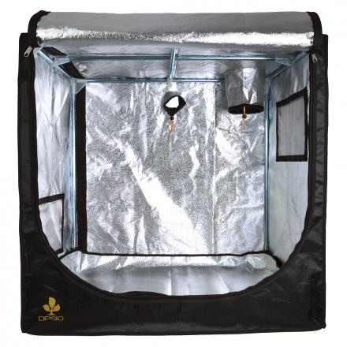
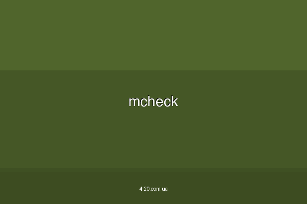

Культивирование марихуаны в закрытом пространстве (индор) позволяет полностью контролировать среду роста, что дает возможность получать стабильно высокий урожай независимо от сезона и климата. Однако домашний гровинг требует внимания к деталям и специального оборудования.
Организация пространства: Где растить?
DIY-Боксы (Самодельные)
Использование шкафов, старых холодильников или даже компьютерных корпусов. Бюджетный вариант, требующий фантазии при организации вентиляции и света.
Гроутенты
Профессиональные палатки с отражающим внутренним слоем. Оптимальный выбор по соотношению цены и качества, с готовыми отверстиями под оборудование.
Готовые Гроубоксы
Автоматизированные системы «все в одном». Максимально простой старт, но ограниченный размер и более высокая стоимость.
Освещение — двигатель роста
Свет заменяет солнечное излучение и определяет фазу развития растения. Важно соблюдать световой режим: 18/6 для вегетации и 12/12 для цветения.
LED (Светодиоды)
Энергоэффективные, почти не греют воздух, имеют полный спектр. Лучший выбор для современных домашних условий.
ДНаТ / ДРИ
Мощный свет, максимально близкий к солнечному. Сильно греют, требуют установки мощных вытяжек и отражателей.
ЭЛС (Энергосберегающие)
Бюджетный вариант для стадии вегетации. Низкий тепловыход, но недостаточная мощность для крупных соцветий.
Вентиляция и контроль запаха
Без циркуляции воздуха растения перестанут расти, а влажность приведет к появлению плесени. Кроме того, в период цветения марихуана выделяет резкий специфический запах.
Решение: Использование мощного вытяжного вентилятора в паре с угольным фильтром. Фильтр полностью поглощает запахи, делая гровинг незаметным для окружающих.
Почва и питание
Почва и Субстраты
Рекомендуется использовать пористые почвы с нейтральным pH (около 7). Кокосовый субстрат обеспечивает лучшую аэрацию корней и ускоряет рост.
Питание (NPK)
На вегетации нужен азот (N) для роста листьев, в период цветения — фосфор (P) и калий (K) для формирования плотных шишек.
💡 Советы экспертов по индору:
- Защита пола: Стелите пленку или пластиковые плиты под боксом, чтобы избежать протечек воды на пол.
- Борьба с холодом: В подвалах поднимайте растения на поддоны или пенополистирол, чтобы корни не замерзли.
- Светоизоляция: Убедитесь, что в бокс не проникает даже малейший луч света ночью, иначе растение может «застрессовать» и перестать цвести.
🌿 Нужно оборудование?
Перейдите в раздел оборудования, чтобы подобрать лучшие лампы, вентиляторы и гроубоксы.
Выбрать оборудование